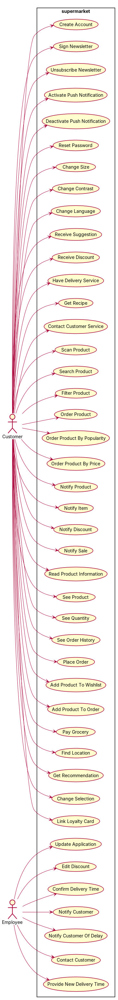
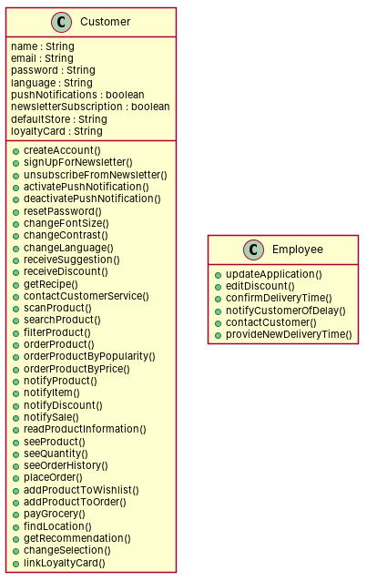

R1: As a customer, I want to create a personal account. R2: As a customer, I want to be able to sign up for the newsletter, so that I am aware of discounts and anomalies. R3: As a customer, I want to be able to unsubscribe from the newsletter, so that I no longer receive the newsletter. R4: As a customer, I want to activate push notifications, so that I am aware of discounts and anomalies. R5: As a customer, I want to be able to deactivate push notifications, so that I no longer receive push notifications. R6: As a customer, I want to reset my password. R7: As a customer, I want to change the font size of the text, so that it is easier for me to read. R8: As a customer, I want to change the contrast between the text and the background, so that it is easier for me to read. R9: As a customer, I want to change the application's language to my native language, so that it is easier for me to understand the app. R10: As a customer, I want to receive suggestions on products that I might like, so that I can find my new favorite products. R11: As a customer, I want to receive a special personal discount on the products that I frequently buy, so that I can save money. R12: As a customer, I want to be notified of special personal discounts, so that I do not miss out on them. R13: As a customer, I want to have a subscription-based delivery service, so that I gain discounts in case of frequent deliveries. R14: As a customer, I want to get recipes based on products I like, so I can potentially discover new meals to cook. R15: As a customer, I want to contact customer service, so that I can have answers to urgent questions when I need them. R16: As a customer, I want to scan products in the store to build my shopping list, so that I do not have to scan my products again at checkout. R17: As a customer, I want to be able to add products to my wishlist, so that I can easily find them in the app. R18: As a customer, I want to search for a product, so that I know if it is in the supermarket's stock. R19: As a customer, I want to filter products on dietary restrictions, so that I know which products are suited for my diet. R20: As a customer, I want to order products by price in ascending order, so that I can save money. R21: As a customer, I want to order products by popularity, so that I become aware of which products are liked by most people. R22: As a customer, I want to be notified of what products are on sale, so that I can save money. R23: As a customer, I want to scan the barcode of an item, so that I can see the product information without searching for it online. R24: As a customer, I want to read the product information, so that I find it easier than reading the product's packaging. R25: As a customer, I want to see if the product I need is in stock, so that I do not end up going to the store for a product that is sold out. R26: As a customer, I want to be notified when an item I need is back in stock, so that I do not miss out on it. R27: As a customer, I want to be able to see if a product that is sold out in my store is available in another store, so that I can purchase the product there. R28: As a customer, I want to see the available quantity of a product in store, so that I know that there is enough to fulfill my needs. R29: As a customer, I want to see when a product will be available again when it is currently sold out, so that I know when I can buy it again. R30: As a customer, I want to be provided with recipe ideas, so that I gain inspiration for my meals. R31: As a customer, I want to see which products were used in a recipe, so that I know which products to buy when I am making a recipe. R32: As a customer, I want to purchase products online, so that I do not have to find the products in the store myself. R33: As a customer, I want to have my groceries delivered to me, so that I do not have to go to the store myself. R34: As a customer, I want to be able to select the date on which my groceries will be delivered, so that I am sure that I have them in time. R35: As a customer, I want to be able to select a time slot for the delivery of my groceries so that I can make sure that I am home to receive the delivery. R36: As a customer, I want to have my groceries delivered using an express delivery service, so that I can have products delivered to me when I need them quickly. R37: As a customer, I want to see my order history, so that I can easily find products that I have purchased before. R38: As a customer, I want to be able to place a previous order again, so that I do not have to add the products to my shopping cart again. R39: As a customer, I want to add products from the overview of my previous order to my new order, so that I can save time adding products to my order. R40: As a customer, I want to be able to digitally pay for my delivered groceries, so that I am not required to pay in person. R41: As a customer, I want to find the location of products in a specific store, so that my shopping becomes easier and faster. R42: As a customer, I want to get recommendation regarding the nearest store, so that I won't be need to select the related store. R43: As a customer, I want to be able to change the selection of my default store, so that I can easily order groceries at a different location. R44: As a customer, I want to link my existing loyalty card, so that I do not have to physically have it. R45: As an employee, I want to update the application with new recipes, so that I can provide customers with inspiration for cooking a meal. R46: As an employee, I want to edit the discounts for a specific product, so that customers are provided with up-to-date information. R47: As an employee, I want to confirm an established delivery time, so that customers are accurately informed on when their groceries will arrive. R48: As an employee, I want to notify customers of suddenly unavailable products in their delivery, so that customers can manage their expectations accordingly. R49: As an employee, I want to notify customers in case of a delayed delivery, so that customers do not have to unnecessarily wait longer than needed. R50: As an employee, I want to contact the customer in case of a canceled delivery so that customers are given full transparency, and their delivery is handled adequately later. R51: As an employee, I want to provide the customer with a new delivery time in case of a canceled delivery, so that the customer remains in control of when their groceries will arrive.
Red, struck-through: removed by ambiguity removal; green: added.
| actors (2 → 2) |
|---|
| customer |
| employee |
| classes (24 → 24) |
|---|
| Anomaly |
| Customer |
| Date |
| Delivery |
| DeliveryService |
| DeliveryTime |
| Discount |
| Employee |
| Grocery |
| Inspiration |
| Item |
| Language |
| Location |
| Meal |
| Money |
| Newsletter |
| Order |
| Product |
| ProductInformation |
| PushNotification |
| Recipe |
| Stock |
| Store |
| Text |
| attributes (5 → 5) |
|---|
| Customer.expectation |
| Item.barcode |
| Product.packaging |
| Product.quantity |
| Text.size |
| relations (5 → 5) |
|---|
| has: Customer -> Delivery |
| has: Customer -> Grocery |
| has: Grocery -> Delivery |
| has: Product -> Customer |
| has: Product -> Location |
| id | req | type | cue | status | readings / explanation |
|---|---|---|---|---|---|
| A1 | R7 | referential | it | resolved | it refers to the font size; it refers to the contrast The use of 'it' is ambiguous as it could refer to the font size or the contrast. |
| A2 | R8 | referential | it | resolved | it refers to the font size; it refers to the contrast The use of 'it' is ambiguous as it could refer to the font size or the contrast. |
| A3 | R9 | referential | it | resolved | it refers to the application's language; it refers to the customer's native language The use of 'it' is ambiguous as it could refer to the application's language or the customer's native language. |
| A4 | R15 | referential | them | resolved | them refers to the questions; them refers to the urgent questions The use of 'them' is ambiguous as it could refer to the questions in general or the urgent questions. |
| A5 | R18 | referential | it | resolved | it refers to the product; it refers to the search The use of 'it' is ambiguous as it could refer to the product or the search process. |
| A6 | R23 | referential | it | resolved | it refers to the barcode; it refers to the product information The use of 'it' is ambiguous as it could refer to the barcode or the product information. |
| A7 | R23 | incompleteness | information | open | information refers to the product; information refers to the barcode The requirement is incomplete as it does not specify what information is being referred to. |
| A8 | R24 | referential | it | resolved | it refers to the product information; it refers to the packaging The use of 'it' is ambiguous as it could refer to the product information or the packaging. |
| A9 | R24 | incompleteness | information | open | information refers to the product; information refers to the barcode The requirement is incomplete as it does not specify what information is being referred to. |
| A10 | R26 | referential | it | resolved | it refers to the item; it refers to the stock The use of 'it' is ambiguous as it could refer to the item or the stock. |
| A11 | R29 | referential | it | resolved | it refers to the product; it refers to the availability The use of 'it' is ambiguous as it could refer to the product or the availability. |
| A12 | R29 | referential | it | resolved | it refers to the product; it refers to the availability The use of 'it' is ambiguous as it could refer to the product or the availability. |
| A13 | R36 | referential | them | resolved | them refers to the delivery service; them refers to the products The use of 'them' is ambiguous as it could refer to the delivery service or the products. |
| A14 | R36 | incompleteness | quickly | open | quickly refers to the delivery; quickly refers to the service The requirement is incomplete as it does not specify what 'quickly' refers to. |
| A15 | R44 | referential | it | resolved | it refers to the loyalty card; it refers to the linking process The use of 'it' is ambiguous as it could refer to the loyalty card or the linking process. |
| A16 | R46 | incompleteness | information | open | information refers to the discounts; information refers to the product The requirement is incomplete as it does not specify what information is being referred to. |
| A17 | R48 | referential | their | resolved | their refers to the customer's; their refers to the delivery's The use of 'their' is ambiguous as it could refer to the customer's or the delivery's. |
| A18 | R48 | referential | their | resolved | their refers to the customer's; their refers to the delivery's The use of 'their' is ambiguous as it could refer to the customer's or the delivery's. |


"""Code skeleton generated from the shared model of D1/supermarket.
Every class and method records the requirement(s) it traces to."""
from __future__ import annotations
import dataclasses as _dc
import enum as _enum
import typing as _t
@_dc.dataclass
class Customer:
"""Source: R1, R2, R3, R4, R5, R6, R7, R8, R9, R10, R11, R12, R13, R14, R15, R16, R17, R18, R19, R20, R21, R22, R23, R24, R25, R26, R27, R28, R29, R30, R31, R32, R33, R34, R35, R36, R37, R38, R39, R40, R41, R42, R43, R44"""
name: _t.Optional[str] = None
email: _t.Optional[str] = None
password: _t.Optional[str] = None
language: _t.Optional[str] = None
pushNotifications: _t.Optional[bool] = None
newsletterSubscription: _t.Optional[bool] = None
defaultStore: _t.Optional[str] = None
loyaltyCard: _t.Optional[str] = None
def createAccount(self) -> None:
"""Realizes UC1 "Create Account" (R1)."""
raise NotImplementedError
def signUpForNewsletter(self) -> None:
"""Realizes UC2 "Sign Newsletter" (R2)."""
raise NotImplementedError
def unsubscribeFromNewsletter(self) -> None:
"""Realizes UC3 "Unsubscribe Newsletter" (R3)."""
raise NotImplementedError
def activatePushNotification(self) -> None:
"""Realizes UC4 "Activate Push Notification" (R4)."""
raise NotImplementedError
def deactivatePushNotification(self) -> None:
"""Realizes UC5 "Deactivate Push Notification" (R5)."""
raise NotImplementedError
def resetPassword(self) -> None:
"""Realizes UC6 "Reset Password" (R6)."""
raise NotImplementedError
def changeFontSize(self) -> None:
"""Realizes UC7 "Change Size" (R7)."""
raise NotImplementedError
def changeContrast(self) -> None:
"""Realizes UC8 "Change Contrast" (R8)."""
raise NotImplementedError
def changeLanguage(self) -> None:
"""Realizes UC9 "Change Language" (R9)."""
raise NotImplementedError
def receiveSuggestion(self) -> None:
"""Realizes UC10 "Receive Suggestion" (R10)."""
raise NotImplementedError
def receiveDiscount(self) -> None:
"""Realizes UC11 "Receive Discount" (R11)."""
raise NotImplementedError
def getRecipe(self) -> None:
"""Realizes UC13 "Get Recipe" (R14)."""
raise NotImplementedError
def contactCustomerService(self) -> None:
"""Realizes UC14 "Contact Customer Service" (R15)."""
raise NotImplementedError
def scanProduct(self) -> None:
"""Realizes UC15 "Scan Product" (R16)."""
raise NotImplementedError
def searchProduct(self) -> None:
"""Realizes UC16 "Search Product" (R18)."""
raise NotImplementedError
def filterProduct(self) -> None:
"""Realizes UC17 "Filter Product" (R19)."""
raise NotImplementedError
def orderProduct(self) -> None:
"""Realizes UC18 "Order Product" (R20)."""
raise NotImplementedError
def orderProductByPopularity(self) -> None:
"""Realizes UC19 "Order Product By Popularity" (R21)."""
raise NotImplementedError
def orderProductByPrice(self) -> None:
"""Realizes UC20 "Order Product By Price" (R20)."""
raise NotImplementedError
def notifyProduct(self) -> None:
"""Realizes UC21 "Notify Product" (R22)."""
raise NotImplementedError
def notifyItem(self) -> None:
"""Realizes UC22 "Notify Item" (R26)."""
raise NotImplementedError
def notifyDiscount(self) -> None:
"""Realizes UC23 "Notify Discount" (R12)."""
raise NotImplementedError
def notifySale(self) -> None:
"""Realizes UC24 "Notify Sale" (R22)."""
raise NotImplementedError
def readProductInformation(self) -> None:
"""Realizes UC25 "Read Product Information" (R24)."""
raise NotImplementedError
def seeProduct(self) -> None:
"""Realizes UC26 "See Product" (R25)."""
raise NotImplementedError
def seeQuantity(self) -> None:
"""Realizes UC27 "See Quantity" (R28)."""
raise NotImplementedError
def seeOrderHistory(self) -> None:
"""Realizes UC28 "See Order History" (R37)."""
raise NotImplementedError
def placeOrder(self) -> None:
"""Realizes UC29 "Place Order" (R38)."""
raise NotImplementedError
def addProductToWishlist(self) -> None:
"""Realizes UC30 "Add Product To Wishlist" (R17)."""
raise NotImplementedError
def addProductToOrder(self) -> None:
"""Realizes UC31 "Add Product To Order" (R39)."""
raise NotImplementedError
def payGrocery(self) -> None:
"""Realizes UC32 "Pay Grocery" (R40)."""
raise NotImplementedError
def findLocation(self) -> None:
"""Realizes UC33 "Find Location" (R41)."""
raise NotImplementedError
def getRecommendation(self) -> None:
"""Realizes UC34 "Get Recommendation" (R42)."""
raise NotImplementedError
def changeSelection(self) -> None:
"""Realizes UC35 "Change Selection" (R43)."""
raise NotImplementedError
def linkLoyaltyCard(self) -> None:
"""Realizes UC36 "Link Loyalty Card" (R44)."""
raise NotImplementedError
@_dc.dataclass
class Employee:
"""Source: R45, R46, R47, R48, R49, R50, R51"""
def updateApplication(self) -> None:
"""Realizes UC37 "Update Application" (R45)."""
raise NotImplementedError
def editDiscount(self) -> None:
"""Realizes UC38 "Edit Discount" (R46)."""
raise NotImplementedError
def confirmDeliveryTime(self) -> None:
"""Realizes UC39 "Confirm Delivery Time" (R47)."""
raise NotImplementedError
def notifyCustomerOfDelay(self) -> None:
"""Realizes UC41 "Notify Customer Of Delay" (R49)."""
raise NotImplementedError
def contactCustomer(self) -> None:
"""Realizes UC42
| python_compiles | True |
|---|---|
| java_compiles | True |
| attribute_mismatches | 0 |
| method_mismatches | 0 |
| use_cases | 43 |
| use_cases_without_actor | 0 |
| use_cases_without_method | 1 |
| actors_without_use_case | 0 |
| relations_to_unknown_class | 0 |
| inconsistencies | 1 |
| inconsistency_rate | 0.0213 |
| requirement_coverage | 1.0 |
| validator fixes | |
| assumptions for open ambiguities | [{"tag": "A3", "assumption": "Information refers to the product"}, {"tag": "R24", "assumption": "Information refers to the product"}, {"tag": "R36", "assumption": "Quickly refers to the delivery"}, {"tag": "R46", "assumption": "Information refers to the discounts"}] |
| element | P | R | F1 | TP/FP/FN |
|---|---|---|---|---|
| classes | 0.5 | 0.091 | 0.154 | 1/1/10 |
| relations | 0.0 | 0.0 | 0.0 | 0/0/14 |
| use_cases_provisional | 1.0 | 0.811 | 0.896 | 43/0/10 |